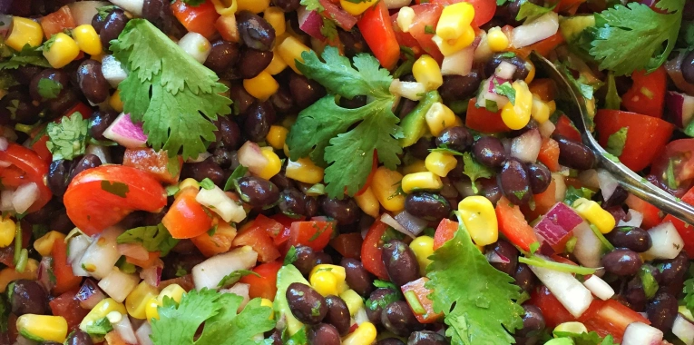

Bean salad

Description
A fresh and tasty bean salad that is going to be a favorite at every party or gathering.
This salad is not only super tasty but also only takes a few minutes to make.
Ingredients
Dressing
- 0,5 cup white vinegar
- 0,25 cup vegetable oil
- 1 Tbsp sugar
- 2 tsp ground cumin
- 0,5 tsp salt
- 0,25 tsp ground black pepper
Salad
- 2 15-oz cans pinto or kidney beans
- 1 15-oz can black beans
- 1 15-oz can corn
- 1 red bell pepper
- 0,5 medium red onion
- 2 jalapenos
- 0,25 cup fresh cilantro
Steps
- Dressing: Whisk together the Dressing ingredients. Set aside.
- Salad: Toss together the Salad ingredients.
- Combine: Mix the dressing into the salad mixture. Cover and refrigerate for an hour to allow flavors to mix (can skip this step if necessary). Keep in an airtight container in the fridge for up to 5-7 days.